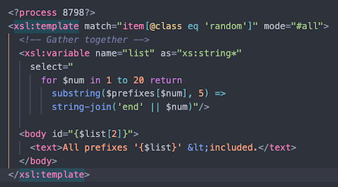
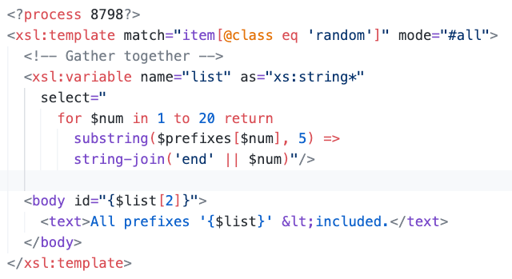
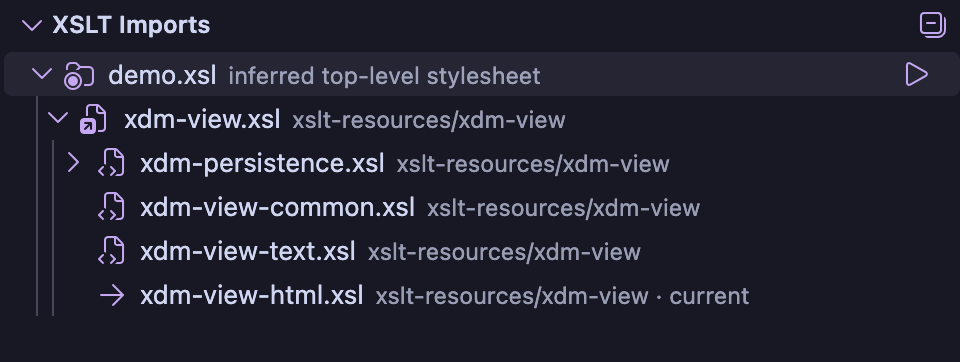
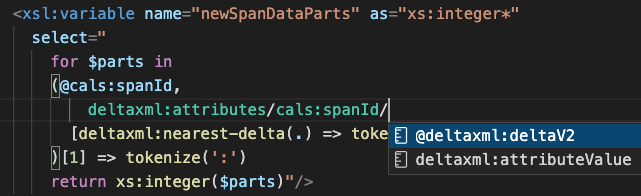
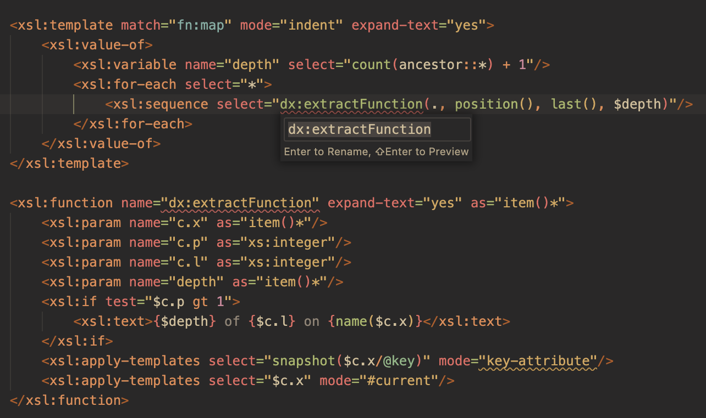

Editing XSLT/XPath
With DeltaXignia's XSLT/XPath extension , Visual Studio Code is a fully featured XSLT 3.0 editor, with support for the XSLT 4.0 and XPath 4.0 features implemented in Saxon 13. Standalone XPath 3.1 and XPath 4.0 files are also fully supported. Visual Studio Code's rich ecosystem is now available to XSLT and XPath developers.
Comprehensive, but language-neutral, descriptions of Visual Studio Code can be found in Microsoft's Visual Studio Code User Guide. Links to key sections are below:
- Keyboard shortcuts
- Multiple selections (multi-cursor)
- Find and Replace
- File encoding support
- Emmet (snippet abbreviations)
The documentation here focuses on XSLT and XPath language features. More general XML features are covered on the Editing XML page. Help on navigating code in the editor is provided in the Code Navigation page.
Syntax Highlighting
Eva Dark Theme

For improved performance and precision, this extension avoids using the default but problematic TM Grammar. Instead we use Visual Studio Code's Semantic Highlighting introduced in 2020. For color themes extensions you should explicitly enable Semantic Highlighting. See the Settings page for more information.
Github Light Theme

The extension provides syntax highlighting for XSLT instructions, XML Literal Result Elements, XML attributes, XML character references, CDATA sections and all tokens within XPath expressions. XPath expressions within Attribute Value Templates (AVTs) and Text Value Templates are syntax highlighted also.
XSLT/XPath Dark Color Themes
The plethora of VS Code themes will highlight XSLT/XPath very well using Semantic Highlighting fallbacks for language-specific tokens. There is however a XSLT Dark Themes extension that enhances a set of popular dark themes specifically for XSLT and XPath:
- Darcula From IntelliJ
- Gruvbox Material Dark
- Iceberg
- Nord
- Tokyo Night Storm
- Zen
Formatting
Two commands are provided for formatting XML, XSLT or XPath expressions:
- Format Document (⇧⌥F) - Format the entire active file.
- Format Selection (⌘K ⌘F) - Format the selected content.
As well as explicitly invoking commands, formatting can be triggered as you type, when you save a file, or when you paste content from the clipboard. The following settings control this:
editor.formatOnType- indents a new line as you press Enter, and indents and completes an end tag as you type</.editor.formatOnSave- formats the file when it is saved.editor.formatOnPaste- formats the pasted content.editor.formatOnSaveMode- with the modifications setting, only the changed code is formatted on save.
The XPath formatter indents code blocks within {}, [] and () bracket-pairs.
Indentation is also adjusted for if/else blocks and range-variable blocks.
Folding
Folding with this extension uses indentation to determine fold regions.
To set a region code-folding block, surround it with <?region?> and <?endregion?> processing instructions.
You may optionally include a label for the processing instructions, for example:
<?region modeA?>
...
<?endregion modeA?>
For more detail and a full list of Folding-related actions see the Folding section in Visual Studio Code's User Guide.
Imports and Top-Level Stylesheets
The functions, templates, variables and other global declarations of a stylesheet's imported and included modules are used throughout the editor: by auto-completion, hover and signature help, go to definition, find references, symbol renaming and the linter.
A 'non-standalone' module - one that's imported by a parent stylesheet - often relies on declarations that only the parent imports. Without knowing the parent, those references can't be resolved: they're missing from auto-completion and hover help, and the linter reports spurious problems that may obscure real ones.
With inferred imports, the top-level ('parent') stylesheet that imports or includes the active module, directly or indirectly, is found and imported along with the module's own imports, so those references can be resolved.
A parent stylesheet opened recently in Visual Studio Code is used first. Otherwise, the parent is found from the workspace's
XSLT files, which are scanned in the background the first time they're needed, so the parent doesn't have to be opened
first. The scan only reads the href attributes of xsl:import and xsl:include
instructions, and is kept up to date as files change. Where a module is imported by more than one stylesheet, the one in the
nearest folder is used. The workspace scan can be turned off with the XSLT.resources.inferParentFromWorkspace
setting.
To use a different top-level stylesheet - for example, one of two that import the same modules - run XSLT: Choose Top-Level Stylesheet... from the Command Palette, or the button in the title bar of the XSLT Imports view. The list shows the top-level stylesheets that import or include the active module, directly or indirectly: the one chosen is used for all the modules of its tree. Automatic goes back to the nearest folder, and Browse... picks any stylesheet, for the active module alone. The choices are saved for the workspace, and XSLT: Reset Top-Level Stylesheet Choices clears them all. The XSLT Imports view marks a chosen stylesheet chosen, rather than inferred.
The XSLT Imports view
The XSLT Imports view in the Explorer shows, for the XSLT module in the active editor, its top-level stylesheet - marked inferred when it was found from the workspace - with its tree of imports and includes. The tree is expanded down to the active module, which is marked current, and clicking a module opens it. The tooltip for a module lists any other stylesheets that import or include it.
The ▶ button on the top-level stylesheet runs it with Quick Run, using the current XML context file - whichever module of its tree is being edited.

Intellisense (Auto Complete)
Intellisense suggestions include all in-scope XSLT and XPath symbols from xsl:accumulator names
to xsl:variable names, to anonymous XPath function parameters. There is intellisense
also for XSLT and XPath functions - help for built-in functions is shown alongside the suggestions list. Symbols from
included/imported files are included in the suggestions list.
Hover Help and Signature Help
Hovering over a function call shows the function's signature and description. This works for
built-in functions, with a link to the function's definition in the W3C specification, and for user-defined
xsl:functions, including those in included and imported stylesheets. Hovering over the name of an
xsl:call-template shows the named template's parameters.
Hovering over a mode name, in an xsl:mode, xsl:template or
xsl:apply-templates, shows where the mode is applied from across the stylesheet's modules: the template
rules of other modes, named templates and functions with an xsl:apply-templates for it - see also
Checks on modes.
While typing the arguments of a function call, signature help (parameter hints) shows the function's
parameters, with the current parameter highlighted. Signature help is also shown for the
xsl:with-param children of an xsl:call-template. Signature help can be triggered
manually with ⇧⌘Space.
In an XSLT 4.0 stylesheet, a documentation note on a function or template is included in its hover help and signature help.
Intellisense for XPath Locations
An XML source file is used for context to provide XML node-names when editing XPath location steps. This is initially the first non-XSLT file opened in Visual Studio Code. When the context file is set, the status-bar for the XSLT file editor will show the context filename. The label [XML context file] is shown if the context file has not been set, and [no XML context] if 'none' was picked. The same file is the XML source for Quick Run.
Locking the context file
To lock the auto-completion context file to a specific file, click on the status-bar item for the context file. You can then select from the list of recently opened XML files or pick a different file using the system's file explorer dialog. The file you pick is for the stylesheet you're editing (and the modules it imports or includes) - each stylesheet keeps its own, see Each stylesheet has its own XML context file.

Variables and XPath Locations
XPath is evaluated as you type so node-names in the auto-completion list are filtered to be just those that are possible given previous XPath steps such as axes and node-name tests. If an XPath location expression starts with a variable that also contains an XPath location, that context from that variable is also used to limit the node-names shown in the auto-completion list.
Triggering the auto-complete list
For XSLT intellisense, the < character triggers suggestions. XSLT instruction suggestions fit the context of the cursor location. On accepting a suggestion a Code Snippet is inserted which will include common attributes for the selected instruction.
Intellisense is manually triggered with ⌃Space, with Tab or Enter used to accept suggestions. These key bindings are fully customizable.
XPath Expressions and Operators
At the start of an XPath expression, the suggestions include snippets for the expressions with several
parts: for, let, some, every, if,
map and array - for example, let $x := … return …, with
placeholders for each part.
After an operand, such as a variable or a closing bracket, only the keyword operators that can follow are
suggested, such as cast as, instance of and union - and
return or satisfies within a for, let,
some or every expression. Short operators such as and,
eq and div are quicker to type, so aren't included.
Parameters for xsl:call-template
Typing < within an xsl:call-template suggests an
xsl:with-param for each of the called template's parameters that isn't passed yet, for
example xsl:with-param colour, which inserts the parameter name. The same applies to the
parameters of the enclosing xsl:iterate within an xsl:next-iteration. The
name attribute of an xsl:with-param also offers the parameter names.
XSLT Instruction Snippets
In an empty file, the xsl:stylesheet and xsl:package suggestions insert a
boiler plate stylesheet complete with namespace declarations, including one for your own functions - an
'identity transform', or one starting from xsl:initial-template. Each is available for
XSLT 3.0 and XSLT 4.0, shown on the right of the suggestion.
The xsl:message suggestions include snippets that use the xdm:debug() function to
show the names and values of in-scope variables and parameters - see Print Debugging.
More Snippets
You can define your own snippets in Visual Studio Code in a declarative way, without writing an extension. See the Visual Studio Code documentation: Create your own snippets.
Emmet Snippets provide a useful shorthand for inserting literal result elements. They can be enabled for XSLT in Visual Studio Code Settings.
Bracket Matching
Matching brackets in XPath expressions are highlighted when the cursor is near one of them. You can jump to the matching bracket with ⇧⌘\
Symbol Renaming
The Rename Symbol command F2 (available in the context-menu) updates all in-scope usages of the symbol - across all imported stylesheet modules. Press ⇧Enter to preview the updates or Enter to perform updates immediately.
Code Refactoring
Code refactoring features are provided via VS Code's Quick Fix (⌘.) feature and the Refactor command:
- xsl:function - full refactor and xsl:function - partial refactor - extract an
xsl:functionfrom selected XSLT instructions - xsl:function (XPath) - full refactor and xsl:function (XPath) - partial refactor - extract an
xsl:functionfrom a selected XPath expression - xsl:template - extract an
xsl:templatefrom selected XSLT instructions - xsl:variable - extract an
xsl:variablefrom a selected XPath expression - Wrap with... (⌥⇧W) - wraps the selected instructions, or the element whose
start tag is at the cursor, in an instruction such as
xsl:if,xsl:chooseorxsl:for-each, or a literal result element - chosen from a list of the instructions allowed at that point, with the recently used ones first. The selected lines are indented within the new instruction, and the cursor is placed in its first attribute, such astestorselect - Extract record type and Use record type - XSLT 4.0, for a map constructor
or
xsl:map, see Records and Enums - Add documentation note - XSLT 4.0, with the cursor on the start tag of an
xsl:functionorxsl:template, see Code Documentation
An available refactoring for a selection is indicated by a light-bulb💡 adjacent to the selection. Clicking on the 💡 will display the available refactorings. The light-bulb is only shown when the code selection is a valid expression or a set of XSLT instructions that would be valid inside the new component. If you don't see the light-bulb when you expect to, check that the code selection completely encloses the XSLT instruction or XPath expression.
The name of an extracted new component should be changed with the Rename Symbol feature, this is automatically triggered when the new component is added.
After refactoring, the XSLT is updated to fix any context problems introduced when code is moved.
The new component has xsl:param instructions added to provide context-properties required.
For extract to xsl:function two modes are available (fully documented here):
- full refactoring - fixes 'missing-context' problems by updating XSLT to reference the context-property parameters.
- partial refactoring - highlights 'missing context' problems in the XSLT.

Refactoring with 'Extract to xsl:function' in full mode, referencing context-parameters $c.x, $c.p and $c.lQuick Fixes
Some problems reported by the linter have a Quick Fix, shown with the 💡 light-bulb when the cursor is on the problem:
- include XSLT module for xdm:debug and xdm:trace and copy xdm-view library into
workspace - for the
xdm:debug()orxdm:trace()function when the xdm-view library isn't included, see Print Debugging - Don't report unknown 'prefix:' functions in this workspace - for a call of a function with a
prefix, such as an extension function, that isn't found; the prefix is added to the
XSLT.validation.externalFunctionPrefixessetting (in user settings when no folder is open), see Java extension functions - Set 'htmlParserJar' in User Settings... - for the
parse-html()function, which needs theXSLT.tasks.htmlParserJarsetting - Convert all Saxon type aliases in the workspace to xsl:item-type... - for a
saxon:type-alias, see Converting Saxon type aliases - Add missing record fields - for a map constructor or
xsl:mapwithout all the required fields of its record type, see Records and Enums - Change to 'name' - for an unknown field of a record type, one for each field name that could replace it
- Add missing xsl:when cases with select and Add missing xsl:when cases with
content - for an
xsl:switchon an enumeration type that doesn't test all its values, see xsl:switch on an enumeration - Remove duplicate enum value - for an enumeration type with a duplicate value
- Add missing @param, Add missing @field and Add missing
@variable - for a documentation note without an
@paramfor each parameter, an@fieldfor each record field, or (in a module note) an@variablefor each global variable, see Code Documentation - Exclude with use-when="false()" - for an
xsl:notein an XSLT 3.0 stylesheet, see Notes in XSLT 3.0 - Add mode="#current" (preferred) and Add mode="#default" - for an
xsl:apply-templateswithout amodein a template rule with a mode, see Checks on modes
XSLT Linter
The XSLT/XPath linter performs checks on your code as you type, performing symbol reference tests across all included modules. Any problems are shown in the Problems Panel and also highlighted inline with a squiggly underline for the specific token at issue.
A module that relies on its parent stylesheet's imports is checked with those imports too - see Imports and Top-Level Stylesheets.
Checks made by the linter
- XML Syntax
- XSLT/XPath Variable name references
- XSLT/XPath Parameter name references
- All other symbol name references (
xsl:accumulatorxsl:keyetc.) - Function name and arity (number of params)
xsl:with-paramnames- File locations in
xsl:importxsl:includexsl:use-package - Order of operators/operands in XPath
- Matching of brackets in XPath
- Presence of the context-item for expressions where it is required
- XSLT instructions and their attributes, and their structure - for example an
xsl:choosewithout anxsl:when, or twoxsl:with-paramelements with the same name - Duplicate global symbol names
- Attribute Value Template Syntax
- Text Value Template Syntax
- Item types on
asattributes of XSLT instructions - Accumulator names in
use-accumulatorsattributes, and accumulators not used by anyuse-accumulatorsattribute - Operators in patterns -
or,and,eqor,outside a predicate or function call, for examplematch="a or b"instead ofmatch="a | b" - Duplicate keys in map constructors and in the
xsl:map-entrychildren of anxsl:map - Braced URI literals, for example
Q{http://example.com}name - The order of
xsl:param,xsl:on-completionandxsl:next-iterationwithinxsl:iterate - Modes - see Checks on modes
- XSLT 4.0: record and enumeration types, see Records and Enums
- XSLT 4.0: the
@paramtags of documentation notes, see Code Documentation
The linter follows the XSLT rules that affect which code is valid:
- Names of functions, templates, modes and variables are matched by namespace across modules, so modules may use different prefixes for the same namespace.
- A module may use a prefix other than
xslfor XSLT instructions, for examplexslt:template. - Forwards compatible mode: for an element with a higher
version, an unknown XSLT element with anxsl:fallbackchild, and an unknown attribute, aren't reported. - Simplified stylesheets: a literal result element with
xsl:versionas the outermost element. - A call of a function that isn't known is not reported when it's guarded by
use-when="function-available('name')".
Checks on modes
A large transform may run in many modes, and a template rule applied in the wrong mode fails silently. The linter warns about:
- An unknown mode - an
xsl:apply-templateswhosemodeisn't declared by anxsl:modeor used by any template rule, in all the stylesheet's modules - often a typo in the mode name. - An
xsl:apply-templateswithout a mode in a template rule with a mode - it applies the default mode, not the template rule's mode. This commonly happens when a template rule is added for a new mode andmode="#current"is forgotten. The quick fixes addmode="#current", ormode="#default"to show that the default mode is intended. There's no warning when the template rule's modes include the default mode - the unnamed mode, or the mode named by the innermost[xsl:]default-modeattribute - or#all, nor for a template rule within an XSLT 4.0xsl:mode, where the enclosing mode is the default. - XSLT 4.0: an
xsl:modewith enclosed template rules but noname, and an enclosed template rule with amodeornameattribute, or without amatch.
Unused Variables
The linter detects unused variables and parameters declared in either XSLT or XPath expressions. These are highlighted by being 'grayed out' in the editor. Global variables are shown as unused if they are not referenced in the current file, the 'unused' state is not affected by imported stylesheets they may reference the same variable.
Compile-time and Run-time problems
The linter is designed to find most basic code problems due to typos or changes to referenced symbols. When XSLT is run, an attempt is made to parse error messages from the Saxon XSLT processor (shown in the Task tab of the Terminal View) so that the problem token is highlighted, and the error message is shown in the Problems view.
You can quickly create a new XSLT file when adding a xsl:import, xsl:use-package or xsl:include XSLT instruction. Simply enter the file path
in the href, press ⌘+click and then, in the 'Unable to Open...' dialog press the Create File button.